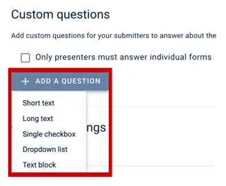
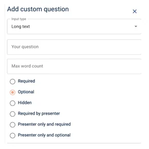
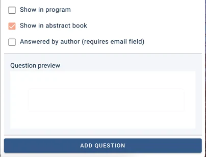

Creating questions for individual authors and presenters
All the fields on the Authors and affiliations questions are completed by the submitter, on behalf of their co-authors, but you add custom fields to be completed individually by the co-authors (or just presenter, if required).#
NB It's important to be able to distinguish between submitters, authors and presenters.
Submitters:There can only be one submitter for every submission. These are the people completing the submission form.
Authors:Authors are listed by submitters in the authors and affiliations question. The author is often the submitter, but often multiple authors are allowed.
Presenter:Presenters can also be the same as both the submitter and the author, but often only one presenter is allowed where there are multiple authors. These are tagged in the authors and affiliations question, and will be denoted in bold or underlined in the program and abstract books.
If you add a custom author question that needs to be answered individually, you will need to make the email field in the authors and affiliations question a required one.
Go to Event dashboard → Abstract Management → Submissions → Form & Setup → Click on Authors and affiliations question → Scroll to Custom author fields
Click the Add A Question button, then choose which type of question you would like the authors to respond to.

A screen will pop up to the right, and this is where you will add the question name, and select whether you want the question to be:
- Required
- Optional
- Hidden
- Required by the presenter
- Presenter only and required
- Presenter only and optional

You then scroll down and select whether the question is shown:
- In the program
- In abstract books
- Or answered by author (requires email field) You will need to check this to enable the question/form to be answered individually by authors/presenters; otherwise, the custom field will be completed by the submitter on behalf of all the other co-authors.
Once you are happy, you can preview the question and clickon the Add Question button at the end to save and add it to the form.

Did this page solve it?
Thanks — this helps us fix it.
Didn't solve it? Ask our support team
No question is too small, and there's no charge for asking. Raise a ticket and someone who knows the software will pick it up.